전산응용기계제도기능사 (2013-07-21 기출문제)
1과목: 기계재료 및 요소
1. 강재의 크기에 따라 표면이 급랭되어 경화하기 쉬우나 중심부에 갈수록 냉각속도가 늦어져 경화량이 적어지는 현상은?
- 경화능
- 잔류응력
- 질량효과
- 노치효과
(정답률: 66%)

2. 구리에 니켈 40 ~ 50% 정도를 함유하는 합금으로 통신기, 전열선 등의 전기저항 재료로 이용되는 것은?
- 모네메탈
- 콘스탄탄
- 엘린바
- 인바
(정답률: 78%)
3. 구리의 일반적인 특성에 관한 설명으로 틀린 것은?(오류 신고가 접수된 문제입니다. 반드시 정답과 해설을 확인하시기 바랍니다.)
- 전연성이 좋아 가공이 용이하다.
- 전기 및 열의 전도성이 우수하다.
- 화학적 저항력이 작아 부식이 잘된다.
- Zn, Sn, Ni, Ag 등과는 합금이 잘된다.
(정답률: 74%)
4. 일반적으로 탄소강에서 탄소함유량이 증가하면 용해 온도는?
- 낮아진다.
- 높아진다.
- 불변이다.
- 불규칙적이다.
(정답률: 52%)
5. 유리섬유에 합침(合浸) 시키는 것이 가능하기 때문에 FRP(fiber reinforced plastic)용으로 사용되는 열경화성 플라스틱은?
- 폴리에틸렌계
- 불포화 폴리에스테르계
- 아크릴계
- 폴리염화비닐계
(정답률: 48%)
6. 열간가공이 쉽고 다듬질 표면이 아름다우며 특히 용접성이 좋고 고온강도가 큰 장점을 갖고 있어 각종 축, 기어, 강력볼트, 암 레버 등에 사용하는 것으로 기호표시를 SCM으로 하는 강은?
- 니켈 - 크롬강
- 니켈 - 크롬 - 몰리브덴강
- 크롬 - 몰리브덴강
- 크롬 - 망간 - 규소강
(정답률: 45%)
7. 탄소강의 가공에 있어서 고온가공의 장점 중 틀린 것은?
- 강괴 중의 기공이 압착된다.
- 결정립이 미세화 되어 강의 성질을 개선시킬 수 있다.
- 편석에 의한 불균일 부분이 확산되어서 균일한 재질을 얻을 수 있다.
- 상온가공에 비해 큰 힘으로 가공을 높일 수 있다.
(정답률: 47%)
8. 평 벨트 전동과 비교한 V벨트 전동의 특징이 아닌 것은?
- 고속운전이 가능하다.
- 미끄럼이 적고 속도비가 크다.
- 바로걸기와 엇걸기 모두 가능하다.
- 접촉 면적이 넓으므로 큰 동력을 전달한다.
(정답률: 63%)
9. 주로 강도만을 필요로 하는 리벳이음으로서 철교, 선박, 차량 등에 사용하는 리벳은?
- 용기용 리벳
- 보일러용 리벳
- 코킹
- 구조용 리벳
(정답률: 72%)
10. 24산 3줄 유니파이 보통 나사의 리드는 몇 mm인가?
- 1.175
- 2.175
- 3.175
- 4.175
(정답률: 56%)
2과목: 기계가공법 및 안전관리
11. 회전운동을 하는 드럼이 안쪽에 있고 바깥에서 양쪽 대칭으로 드럼을 밀어 붙여 마찰력이 발생하도록 한 브레이크는?(오류 신고가 접수된 문제입니다. 반드시 정답과 해설을 확인하시기 바랍니다.)
- 블록 브레이크
- 밴드 브레이크
- 드럼 브레이크
- 캘리퍼형 원판브레이크
(정답률: 34%)
12. 평판 모양의 쐐기를 이용하여 인장력이나 압축력을 받는 2개의 축을 연결하는 결합용 기계요소는?
- 코터
- 커플링
- 아이볼트
- 테이퍼 키
(정답률: 41%)
13. 키의 종류 중 페더 키(feather key)라고도 하며, 회전력의 전달과 동시에 축 방향으로 보스를 이동시킬 필요가 있을 때 사용되는 것은?
- 미끄럼 키
- 반달 키
- 새들 키
- 접선 키
(정답률: 53%)
14. 동력 전달용 기계요소가 아닌 것은?
- 기어
- 체인
- 마찰차
- 유압 댐퍼
(정답률: 68%)
15. 단면적이 100mm2인 강재에 300 N 의 전단하중이 작용할 때 전단응력(N/mm2)은?
- 1
- 2
- 3
- 4
(정답률: 86%)
16. 지름이 100mm 인 연강을 회전수 300 r/min(=rpm), 이송 0.3 mm/rev, 길이 50mm를 1회 가공할 때 소요되는 시간은 약 몇 초인가?
- 약 20초
- 약 33초
- 약 40초
- 약 56초
(정답률: 58%)
17. 단단한 재료일수록 드릴의 선단 각도는 어떻게 해 주어야 하는가?
- 일정하게 한다.
- 크게 한다.
- 작게 한다.
- 시작점에서는 작은 각도, 끝점에서는 큰 각도로 한다.
(정답률: 55%)
18. 밀링 머신의 부속 장치가 아닌 것은?
- 분할대
- 크로스 레일
- 래크 절삭 장치
- 회전 테이블
(정답률: 47%)
19. 연삭숫돌의 기호 WA 60 K m V 에서 '60'은 무엇을 나타내는가?
- 숫돌입자
- 입도
- 조직
- 결합도
(정답률: 66%)
20. CNC 선반의 준비기능에서 G32 코드의 기능은?
- 드릴 가공
- 모서리 정밀 가공
- 홈 가공
- 나사 절삭 가공
(정답률: 52%)
21. 키 홈, 스프라인 홈, 원형이나 다각형의 구멍들을 가공하는 브로칭 머신이다.
- 내면 브로칭 머신
- 특수 브로칭 머신
- 자동 브로칭 머신
- 외경 브로칭 머신
(정답률: 50%)
22. 오차가 + 20 μm인 마이크로미터로 측정한 결과 55.25mm의 측정값을 얻었다면 실제값은?
- 55.18mm
- 55.23mm
- 55.25mm
- 55.27mm
(정답률: 66%)
23. 절삭제의 사용하는 목적과 관계가 없는 것은?
- 공구의 경도 저하를 방지한다.
- 가공물의 정밀도 저하를 방지한다.
- 윤활 및 세척작용을 한다.
- 절삭작용을 어렵게 한다.
(정답률: 82%)
24. 공구에 진동을 주고 공작물과 공구사이에 연삭입자와 가공액을 주고 전기적 에너지를 기계적 에너지로 변화함으로써 공작물을 정밀하게 다듬는 방법은?
- 래핑
- 수퍼 피니싱
- 전해 연마
- 초음파 가공
(정답률: 40%)
25. 선반의 척 중 불규칙한 모양의 공작물을 고정하기에 가장 적합한 것은?
- 압축공기 척
- 연동 척
- 마그네틱 척
- 단동 척
(정답률: 59%)
3과목: 기계제도
26. 대칭인 물체를 1/4 절단하여 물체의 안과 밖의 모양을 동시에 나타낼 수 있는 단면도는?
- 한쪽단면도
- 온단면도
- 부분단면도
- 회전도시 단면도
(정답률: 76%)
27. 도면에 마련하는 양식 중에서 마이크로 필름 등으로 촬영하거나 복사 및 철할 때 편의를 위하여 마련하는 것은?
- 윤곽선
- 표제란
- 중심마크
- 비교눈금
(정답률: 70%)
28. 구멍의 최소치수가 축의 최대치수보다 큰 경우는 무슨 끼워맞춤인가?
- 헐거운 끼워맞춤
- 중간 끼워맞춤
- 억지 끼워맞춤
- 강한 억지 끼워맞춤
(정답률: 79%)
29. 다음의 기하공차 기호를 바르게 해석한 것은?
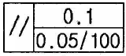
- 평행도가 전체 길이에 대해 0.1mm, 지정길이 100mm에 대해 0.⑤mm의 허용치를 갖는다.
- 평행도가 전체 길이에 대해 0.5mm, 지정길이 100mm에 대해 0.1mm의 허용치를 갖는다.
- 대칭도가 전체 길이에 대해 0.1mm, 지정길이 100mm에 대해 0.⑤mm의 허용치를 갖는다.
- 대칭도가 전체 길이에 대해 0.⑤mm, 지정길이 100mm에 대해 0.1mm의 허용치를 갖는다.
(정답률: 73%)
30. 투상도의 올바른 선택방법으로 틀린 것은?
- 대상 물체의 모양이나 기능을 가장 잘 나타낼 수 있는 면을 주투상도로 한다.
- 조립도와 같이 주로 물체의 기능을 표시하는 도면에서는 대상물을 사용하는 상태로 그린다.
- 부품도는 조립도와 같은 방향으로만 그려야 한다.
- 길이가 긴 물체는 특별한 사유가 없는 한 안정감 있게 옆으로 누워서 그린다.
(정답률: 62%)
31. 투상에 사용하는 숨은선을 올바르게 적용한 것은?
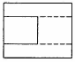
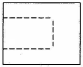
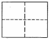
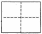
(정답률: 63%)
32. 대상물의 가공 전 또는 가공 후의 모양을 표시하는데 사용하는 선은?
- 가는 1점 쇄선
- 가는 2점 쇄선
- 가는 실선
- 굵은 실선
(정답률: 64%)
33. KS 부문별 분류 기호에서 기계를 나타내는 것은?
- KS A
- KS B
- KS K
- KS H
(정답률: 86%)
34. 다음 중 재료 기호에 대한 명칭이 잘못된 것은?
- SM20C : 기계 구조용 탄소강재
- BC3 : 황동 주물
- GC200 : 회 주철품
- SC 450 : 탄소강 주강품
(정답률: 59%)
35. 치수의 허용 한계를 기입할 때 일반사항에 대한 설명으로 틀린 것은?
- 기능에 관련되는 치수와 허용 한계는 기능을 요구하는 부위에 직접 기입하는 것이 좋다.
- 직렬 치수 기입법으로 치수를 기입할 때는 치수 공차가 누적되므로 공차의 누적이 기능에 관계가 없는 경우에만 사용하는 것이 좋다.
- 병렬 치수 기입법으로 치수를 기입할 때 치수 공차는 다른 치수의 공차에 영향을 주기 때문에 기능 조건을 고려하여 공차를 적용한다.
- 축과 같이 직렬 치수는 괄호를 붙여서 참고 치수로 기입하는 것이 좋다.
(정답률: 45%)
36. 도면을 그릴 때 가는 2점 쇄선으로 그려야 하는 것은?
- 숨은선
- 피치선
- 가상선
- 해칭선
(정답률: 74%)
37. 다음 그림은 제3각법으로 제도한 것이다. 이 물체의 등각 투상도로 알맞은 것은?
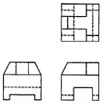
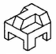
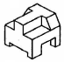
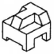
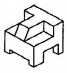
(정답률: 78%)
38. 구멍의 치수가
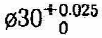
, 축의 치수가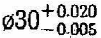
일 때 최대 죔새는 얼마 인가?- 0.030
- 0.025
- 0.020
- 0.0⑤
(정답률: 73%)
39. 다음 등각 투상도에서 화살표 방향을 정면도로 할 경우 평면도로 올바른 것은?
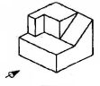
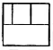
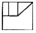
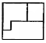
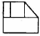
(정답률: 75%)
40. 제3각법으로 그린 투상도의 평면도로 옳은 것은?
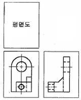
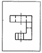
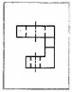
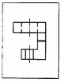
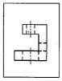
(정답률: 68%)
41. 다음 중 치수 기입 방법으로 맞는 것은?
- 길이의 치수는 원칙적으로 밀리미터의 단위로 기입하고, 단위 기호를 붙인다.
- 각도의 치수는 일반적으로 도, 분, 초 등의 단위를 기입한다.
- 관련되는 치수는 나누어서 기입한다.
- 가공이나 조립할 때, 기준으로 하는 곳이 있더라도 상관없이 기입한다.
(정답률: 54%)
42. 기하 공차의 구분 중 모양 공차의 종류에 속하지 않는 것은?
- 진직도 공차
- 평행도 공차
- 진원도 공차
- 면의 윤곽도 공차
(정답률: 64%)
43. 다음의 표면 거칠기 기호 중 주조품의 표면 제거 가공을 허락하지 않는 것을 지시하는 기호는?
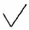
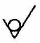
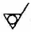
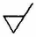
(정답률: 82%)
44. 가공 방법의 약호에서 연삭가공의 기호는?
- L
- D
- G
- M
(정답률: 60%)
45. 구의 지름을 나타내는 치수 보조기호는?
- ø
- C
- Sø
- R
(정답률: 81%)
46. 용접부 표면의 형상에서 동일 평면으로 다듬질함을 표시하는 보조 기호는?
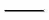
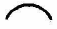

(정답률: 63%)
47. 구름 베어링의 호칭 번호가 6204일 때 베어링 안지름은 얼마인가?
- 62mm
- 31mm
- 20mm
- 15mm
(정답률: 85%)
48. 볼트의 규격 M12 × 80의 설명으로 맞는 것은?
- 미터나사 호칭지름이 12mm이다.
- 미터나사 골지름이 12mm이다.
- 미터나사 피치가 80mm이다.
- 미터나사 바깥지름이 80mm이다.
(정답률: 67%)
49. 코일 스프링의 도시 방법으로 적합한 것은?
- 모양만을 도시할 때는 스프링의 외형을 가는 파선으로 그린다.
- 특별한 단서가 없는 한 모두 오른쪽 감기로 도시한다.
- 중간 부분을 생략할 때는 생략한 부분을 파단선을 이용하여 도시한다.
- 원칙적으로 하중이 걸린 상태에서 도시한다.
(정답률: 70%)
50. 축에서 도형 내의 특정 부분이 평면 또는 구멍의 일부가 평면임을 나타낼 때의 도시 방법은?
- "평면"이라고 표시한다.
- 가는 파선을 사각형으로 나타낸다.
- 굵은 실선을 대각선으로 나타낸다.
- 가는 실선을 대각선으로 나타낸다.
(정답률: 61%)
51. 리벳이음의 도시방법에 대한 설명 중 옳은 것은?
- 리벳은 길이 방향으로 절단하여 도시한다.
- 구조물에 쓰이는 리벳은 약도로 표시할 수 있다.
- 얇은 판, 형강 등의 단면은 가는실선으로 도시한다.
- 리벳의 위치만을 표시할 때는 굵은실선으로 그린다.
(정답률: 36%)
52. 도면에 3/8-16UNC-2A로 표시되어있다. 이에 대한 설명 중 틀린 것은?
- 3/8은 나사의 지름을 표시하는 숫자이다.
- 16은 1인치 내의 나사산의 수를 표시한 것이다.
- UNC는 유니파이 보통나사를 의미한다.
- 2A는 수량을 의미한다.
(정답률: 63%)
53. 스퍼 기어에서 축 방향에서 본 투상도의 이뿌리원을 나타내는 선은?
- 가는 1점 쇄선
- 가는 실선
- 굵은 실선
- 가는 2점 쇄선
(정답률: 56%)
54. 배관기호에서 온도계의 표시방법으로 바른 것은?
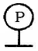
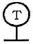
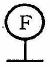
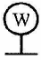
(정답률: 67%)
55. 스프로킷 휠의 도시방법으로 틀린 것은?
- 바깥지름 - 굵은 실선
- 피치원 - 가는 1점 쇄선
- 이뿌리원 - 가는 1점 쇄선
- 축 직각 단면으로 도시할 때 이뿌리선 - 굵은 실선
(정답률: 74%)
56. 기어의 오목표에 [기준래크]의 치형, 압력각, 모듈을 기입 한다. 여기서 [기준래크]란 무엇을 뜻하는가?
- 기어 이를 가공할 기계종류를 지정한 것이다.
- 기어 이를 가공할 때 설치할 곳을 지정한 것이다.
- 기어 이를 가공할 공구를 지정한 것이다.
- 기어 이를 검사할 측정기를 지정한 것이다.
(정답률: 49%)
57. CAD 시스템에서 사용되는 입력 장치의 종류가 아닌 것은?
- 키보드
- 마우스
- 디지타이저
- 플로터
(정답률: 76%)
58. 3차원 형상을 솔리드 모델링하기 위한 기본요소로 프리미티브라고 한다. 이 프리미티브가 아닌 것은?
- 박스(box)
- 실린더(cylinder)
- 원뿔(cone)
- 퓨전(fusion)
(정답률: 63%)
59. 마지막 입력 점으로부터 다음 점까지의 거리와 각도를 입력하는 좌표 입력 방법은?
- 절대 좌표 입력
- 상대 좌표 입력
- 상대 극좌표 입력
- 요소 투영점 입력
(정답률: 61%)
60. 캐시 메모리(cache memory)에 대한 설명으로 맞는 것은?
- 연산장치로서 주로 나눗셈에 이용된다.
- 제어장치로 명령을 해독하는데 주로 사용된다.
- 중앙처리장치와 주기억장치 사이의 속도차이를 극복하기 위해 사용한다.
- 보조 기억장치로서 휴대가 가능하다.
(정답률: 73%)